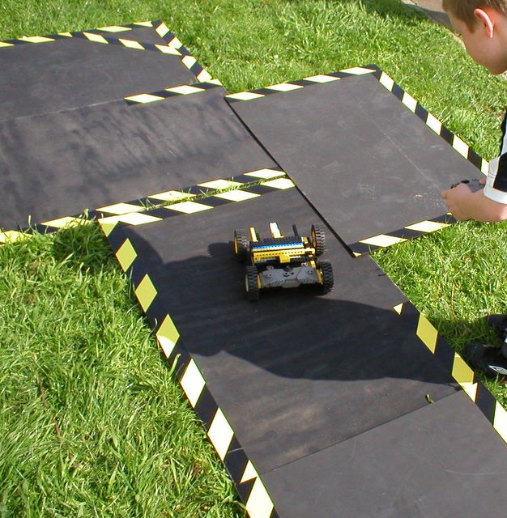

First |
Previous Picture |
Next Picture |
Last | Thumbnails
The image shows the Lego Technic Robot built by Gabriel and Danny, stuck while trying to drive around a course. This Lego Technic robot did not steer well - it dragged on the floor, and handled horribly. This is a real pity - because it was well recognised (from other events) that Danny was the best driver in the group.
